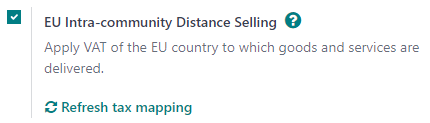
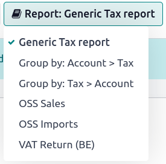

Ventas a distancia intracomunitarias en la UE¶
Las ventas a distancia intracomunitarias en la UE involucran el comercio transfronterizo de bienes y servicios de proveedores registrados a efectos del IVA a personas físicas (B2C) situadas en un Estado miembro de la Unión Europea. La transacción se realiza a distancia, por lo general a través de plataformas en línea, pedidos por correo, teléfono u otros medios de comunicación.
Las ventas a distancia intracomunitaria en la UE están sujeta a normas y reglamentos específicos relacionados con el IVA. El proveedor debe cambiar el IVA según el país del comprador.
Nota
Esto es válido incluso si el proveedor no forma parte de la Unión Europea.
Configuración¶
La función venta a distancia intracomunitaria de la UE le ayuda a cumplir esta normativa con la creación y configuración de nuevas posiciones fiscales e impuestos según el país de su empresa. Para activarla, vaya a , marque venta a distancia intracomunitaria UE, y guardar.
Truco
Si desea que sus posiciones fiscales se actualicen automáticamente cada vez que añada o modifique impuestos, vaya a y haga clic en :guilabel: Actualizar mapeo de impuestos.
Nota
Recomendamos ampliamente que compruebe que el mapeo propuesto es adecuado para los productos y servicios que vende antes de utilizarlo.
Ventanilla única¶
El sistema ventanilla única (OSS, por sus siglas en inglés) introducido por la Unión Europea simplifica la recaudación del IVA en las ventas transfronterizas de bienes y servicios. Su uso principal es el de empresa a consumidor (B2C). Gracias al OSS, las empresas pueden registrarse a efectos del IVA en su país de origen y utilizar un portal en línea único para gestionar todos los trámites relacionados con el IVA de sus ventas en la UE. Básicamente existen dos regímenes: el OSS de la Unión para los servicios transfronterizos y el OSS de importación para los bienes cuyo valor sea igual o inferior a 150 euros.
Reportes¶
Para generar reportes de ventas OSS o importaciones OSS y enviarlos al portal OSS, vaya a , haga clic en Reporte: Reporte de impuestos genérico, y seleccione Ventas OSS o Importaciones OSS. Una vez seleccionado, haga clic en PDF, XLSX, o XML en la esquina superior izquierda. Esto generará el reporte en el formato seleccionado. Una vez generado, inicie sesión en la plataforma de su autoridad federal correspondiente para enviarlo al portal de OSS.
